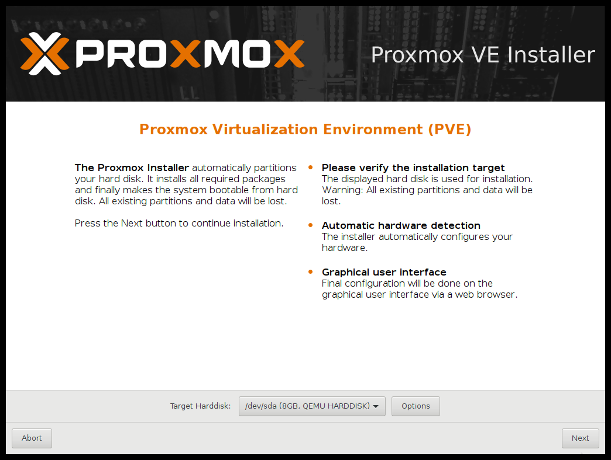
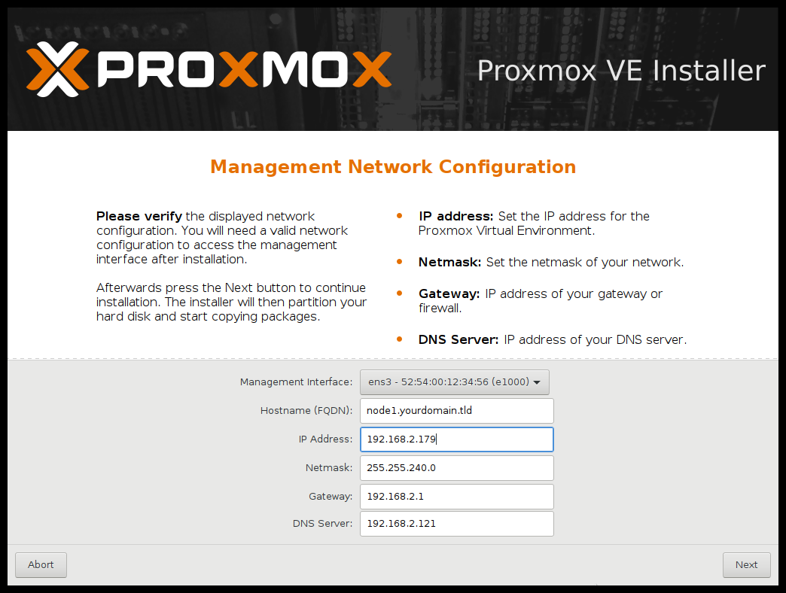
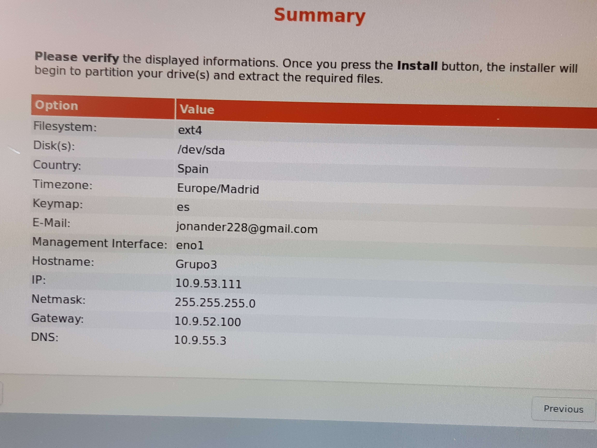

INSTALACIÓN DEL PROXMOX
1.- Lo primero que neciesitaremos para poder crear nuestro servidor es instalar Proxmox
Para ello deberemos Descargar la iso de la sigiente pagina
https://www.proxmox.com/en/downloads
2.- Una vez tengamos la iso debemos crear un USB booteable para ello utilizaremos Etcher
3.- Para el sigueinte paso tendremos que insertar el usb booteable en la maquina en la que queremos instalar el proxmox y cambiar el orden de arranque
4.- El proximos pasos se basan en la configuracion del proxmox. En esta guia enseñaremos nuestra configuracion
6.- lo primero es decidir la particion donde queremos que se instale el proxmox

7.- Ahora toca decidir caracteristicas como la ip que queramos que tenga el servidor, la gateway, la contraseña que queremos que tenga y el puerto de acceso entre otras cosas

8.- una vez terminada la instalacion acabaremos en esta pantalla que nos dice que reiniciemos y entremos desde otra maquina antes de reiniciar
IMPORTANTE : aseguraros de hacer una foto a esta pantalla ya que es muy importante acordarnos de las configuraciones que hemos hecho

INSTALACIÓN DE UBUNTU
1.- Habiendo completado la instalacion reinicimos la maquina
2.- Despues de reinciar debemos entrar a la ip de la maquina Proxmox utilizando otra maquina en la misma
red llamaremos a esta maquina "cliente"
3.- Desde el cliente empezaremos el proceso de creacion de una nueva maquina virtual

4.- Para ello tendremos que subir una iso del sistema que queramos utilizar para el servidor web (en
nuestro caso utilizaremos Ubuntu 16.4)
5.- Una vez hayamos subido la iso debemos especificar las caracteristicas de la maquina teniendo en
cuenta las limitaciones fisicas de la maquina Proxmox

6.- Lo siguiente sera instalar el sistema operativo de manera habitual
INSTALACIÓN DEL APACHE2
1.- Habiendo instalado el sistema operativo debemos instalar y configurar el servicio apache
2.-Para ello abriremos la consola de comandos de linux y escribimos los siguentes comandos
apt-get update
apt-get upgrade
sudo apt install apache2
3.- una vez instalado debemos abrir el archivo de configuracion
sudo nano /etc/apache2/apache2.conf
4.- Dentro del archivo de confiuracion añadimos esta linea al final del todo
ServerName Dominio_o_ip
5.- Ejecutamos el siguiente comando para asegurarnos de que todo funciona
apache2ctl configtest
6.- entramos al archivo de configuracion de los host virtuales :
sudo nano /etc/apache2/sites-available/example.com.conf

7.- En este archivo podemos cambiar varias caracteristicas que queramos que tenga el host virtual
las lineas mas importantes son
DirectoryIndex donde especificamos el archivo Index es decir la pagian principal
DocumentRoot donde especificamos la ruta de nuestra pagina web
8.- Guardamos el archivo y ejecutamos los siguientes comandos para activarlo
sudo a2ensite example.com.conf
sudo a2dissite 000-default.conf
9.- por ultimo reinciamos el servicio apache
sudo service apache2 restart
10.- Ya podemos entrar a la pagina utilizando la ip del servidor y el puerto que hayamos establecido en el archivo virtual host
10.9.53.164:80/Pagian1.html
COPIAS DE SEGURIDAD
Es muy recomendabel crear una copia de seguridad del servidor una vez todo funcione
Para ello deberemos descargar el nfs dentro del servidor proxmox utilizando los siguientes comandos
sudo su
apt-get update
apt-gett install nfs-kernel-server
Despues creamos el directorio y le damos los permisos necesarios
mkdir -p /nfs/compartida
chown chown nobody:nogroup /nfs/compartida
chmod 777 /nfs/compartida
Ahora es necesario otorgar los permisos de acceso a la máquina que cumple la función de servidor, para esto debemos modificar el archivo /etc/exports
nano /etc/exports
al final del archivo añadimos la siguiente linea
/nfs/compartido 10.9.53.111(rw,sync,no_subtree_check)